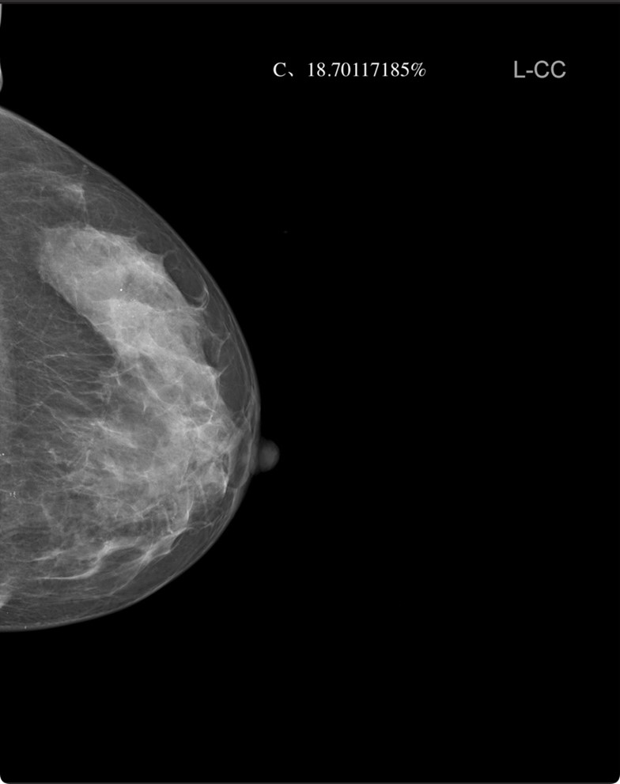
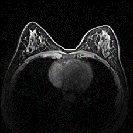
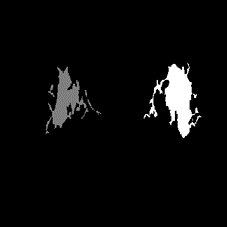
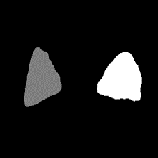

Multi-tasking Breast Density Classification

Published Wed 06 September 2023
Breast cancer is a prevalent form of cancer among women and remains the leading cause of cancer-related deaths in many developed countries. The disease often spreads to distant organs such as the bones, liver, lungs, and brain, making it challenging to cure. Breast density serves as a crucial indicator in assessing breast health, representing the relative proportion of fat tissue to breast tissue within the breast. Research has demonstrated that higher breast density is associated with an increased risk of breast cancer. Hence, categorizing breast density can aid physicians in making informed diagnostic and therapeutic decisions concerning breast diseases.
The development of a multi-task breast density classification model holds significant promise. This model can determine the BI-RADS grade of mammogram images while also providing outputs such as the percentage of dense tissue calculated using traditional methods, as well as predictions of the percentage of dense tissue based on MRI examinations. By offering more comprehensive information, this model equips physicians with valuable insights to support diagnosis and the development of personalized treatment plans.
Multi-tasking Breast Density Classification

Published Wed 06 September 2023
The study of breast dense tissue holds immense significance in the evaluation of breast health, early detection of breast diseases, and risk assessment of breast cancer. Breast density refers to the presence of a higher proportion of glands and connective tissue in the breast, relative to fat tissue. Research has indicated that women with denser breast tissue have a higher risk of developing breast cancer compared to those with a higher proportion of fat tissue. Therefore, investigating dense breast tissue plays a crucial role in enabling doctors to more accurately assess breast health. Our research primarily focuses on employing various techniques to segment Magnetic Resonance Imaging (MRI) images of breasts and identify dense tissues, in order to calculate breast density. This enables initial screening and assessment of breast health, as well as evaluating the risk of breast cancer.
Project leaders
Partner Organisations
江苏集萃苏科思科技有限公司
Project Example


The first image is the MRI original image of the breast, the second image is the segmentation of dense tissue within the breast, and the third image is the segmentation of the entire breast